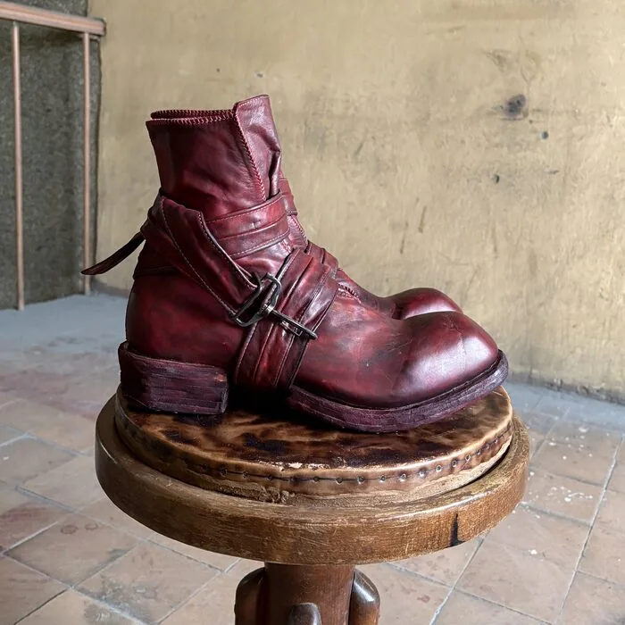
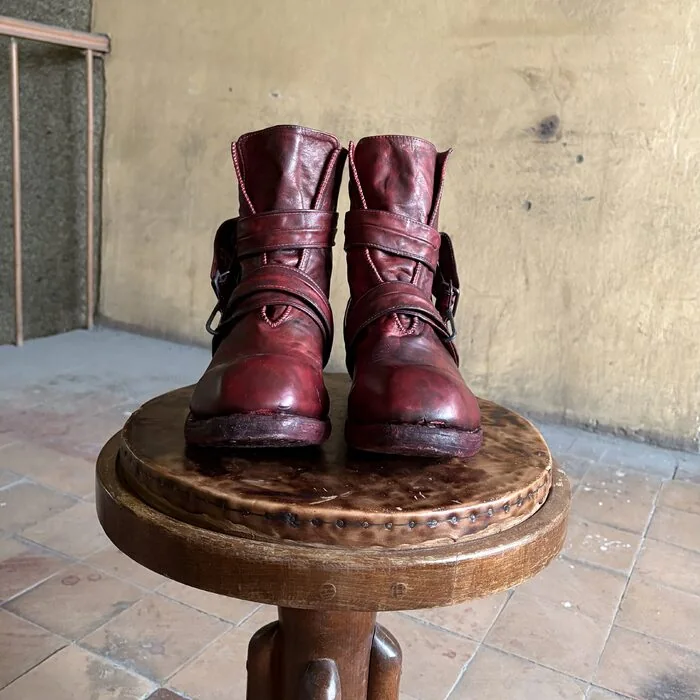
Модель: Высокие ботинки барабанного окрашивания
Создан: 2026

Данный раздел представляет собой библиотеку изображений различных изделий.
Это могут быть как экспериментальные проекты, так и индивидуальные заказы клиентов.
Не удалось открыть модель. Попробуйте ещё раз или перейдите к контактам ниже.


Модель: Высокие ботинки барабанного окрашивания
Создан: 2026
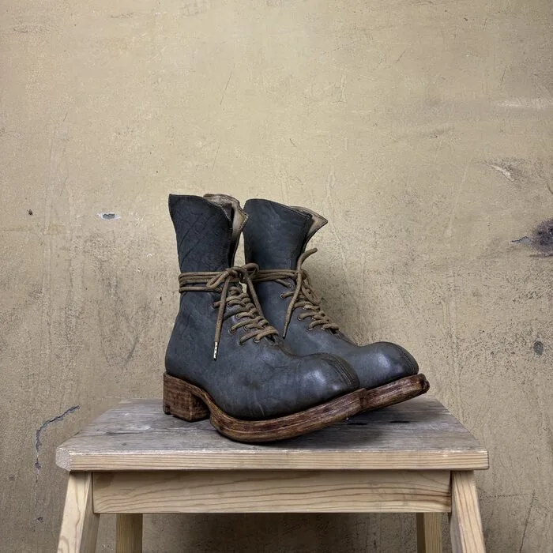
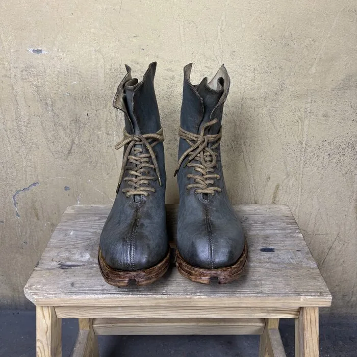
Модель: SB101L(C)SMH(D)
Высокие ботинки из вощёной замши
Создан: 2026
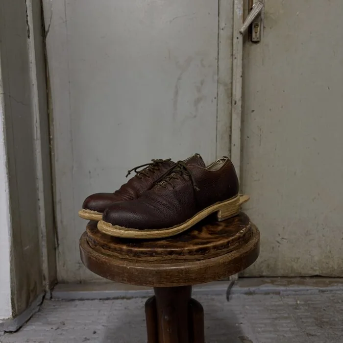
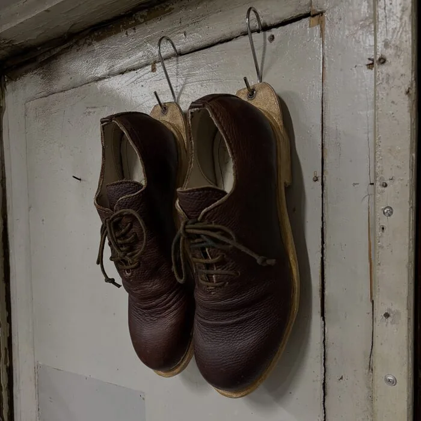
Модель: SB101L(C)SMH(D)
Высокие ботинки из вощёной замши
Создан: 2026
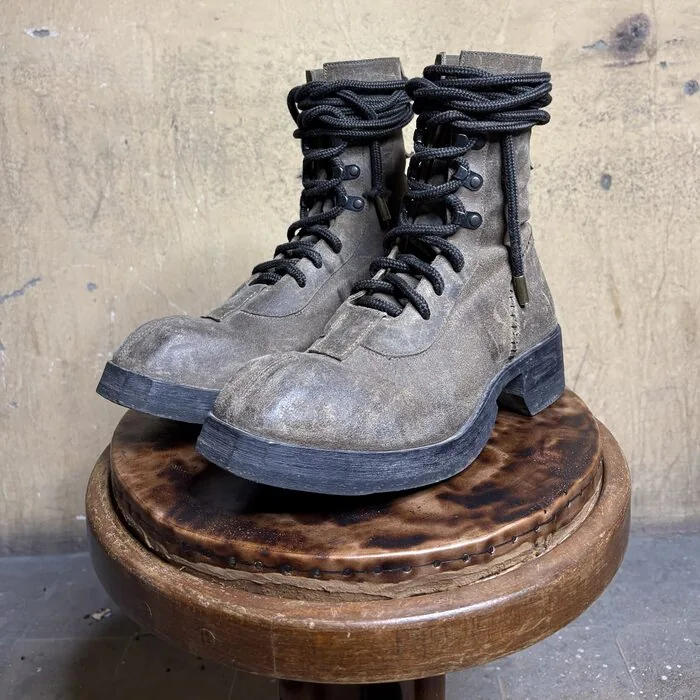
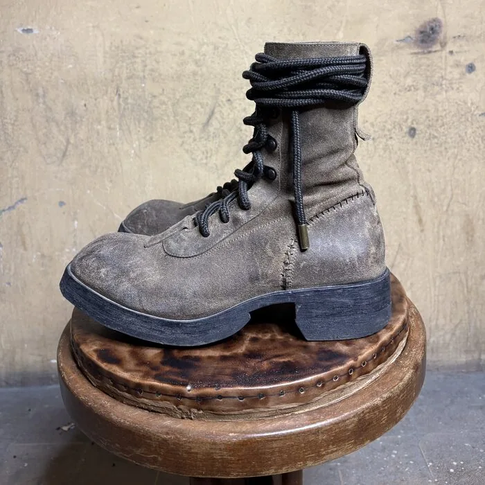
Модель: SB101L(C)SMH(D)
Высокие ботинки из вощёной замши
Создан: 2024
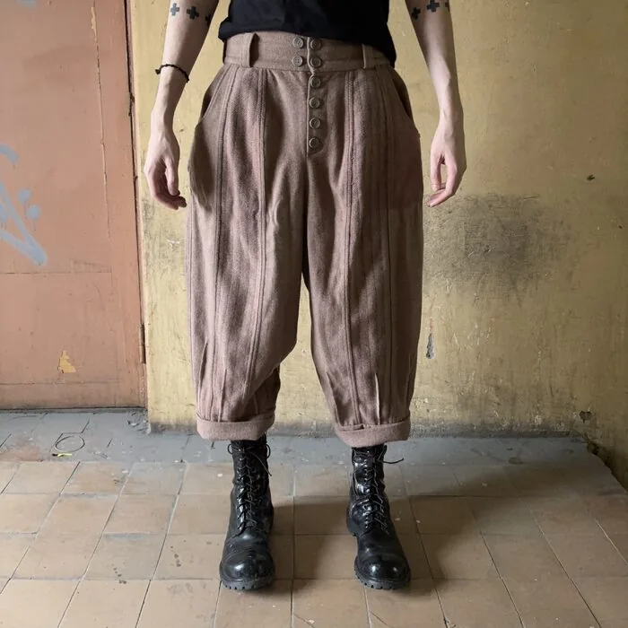
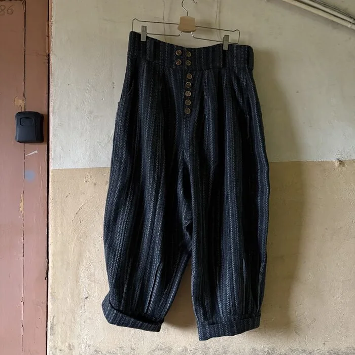
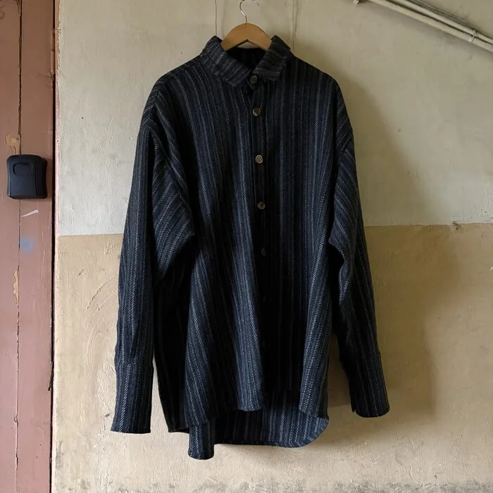
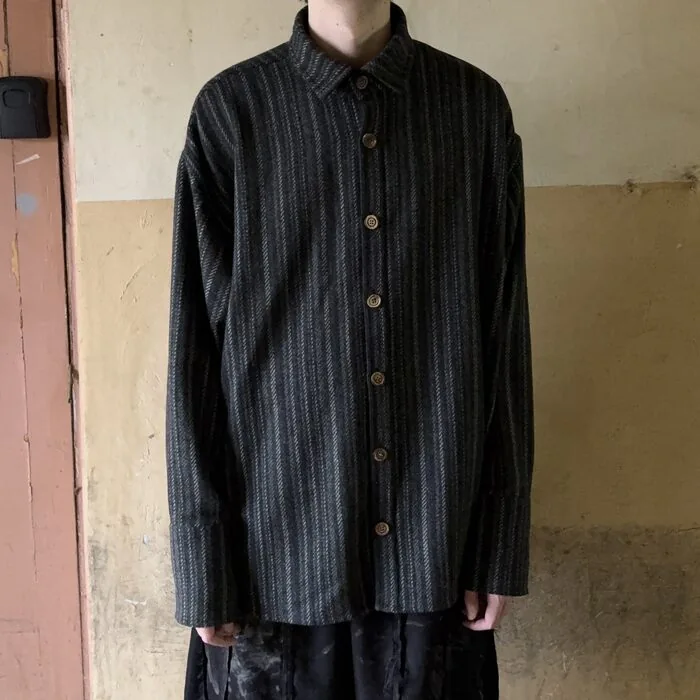
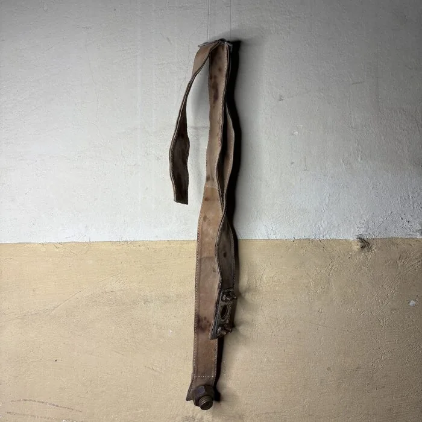
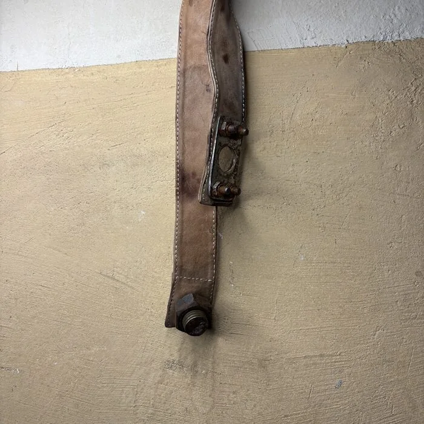
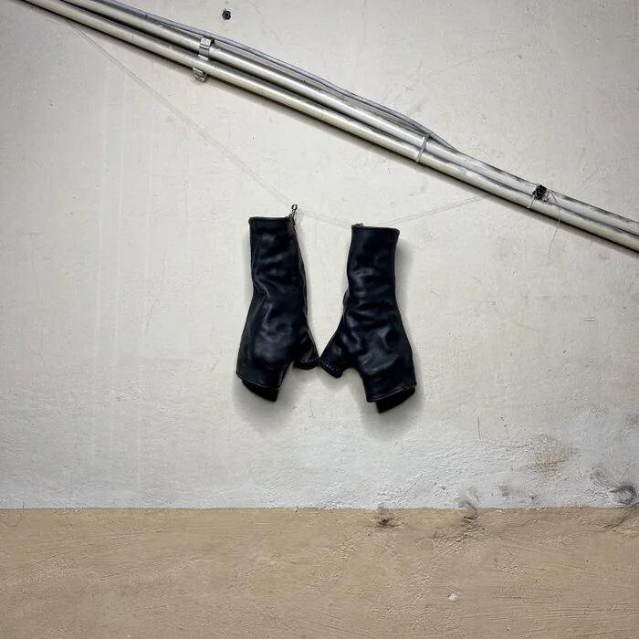
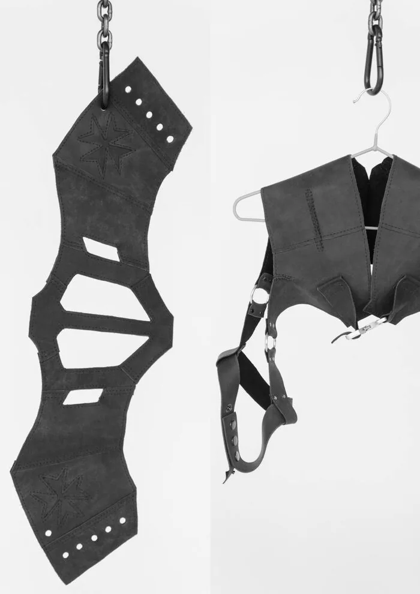
Коллекция SRM:COAD(TEST)
Создан: 2023
Модель: SB101L(C)SMH(D)
Высокие ботинки из вощёной замши
Создан: 2024
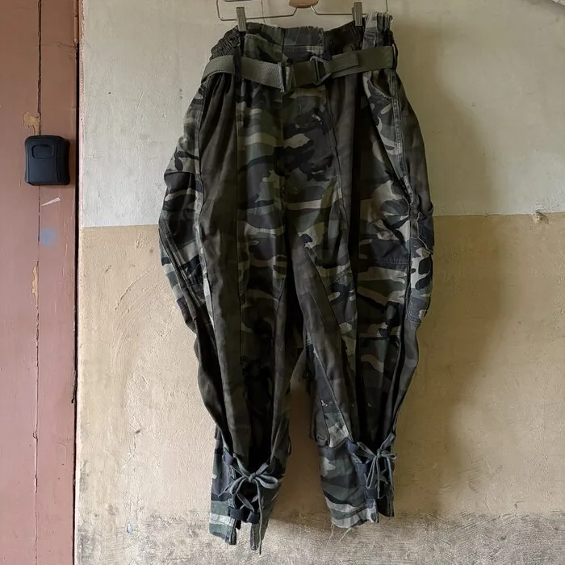
Модель: -
Камуфляжные штаны
Создан: 2022
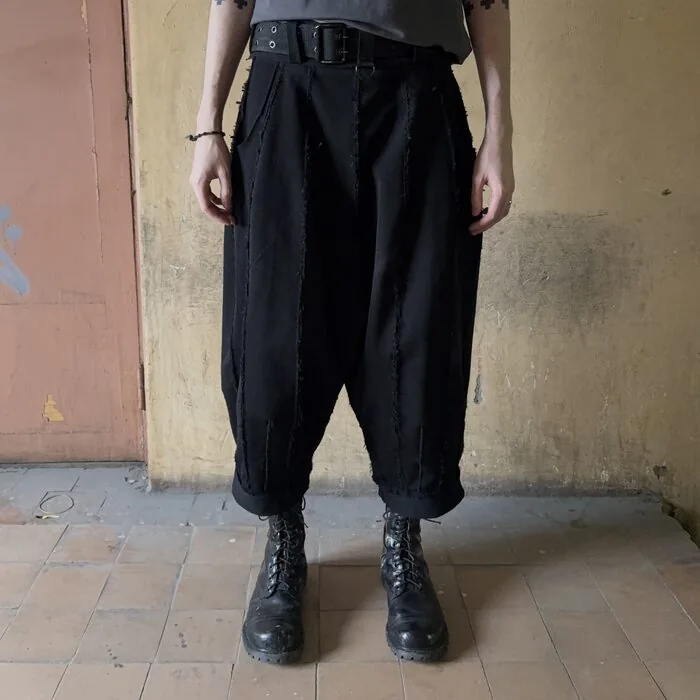
Модель: -
Брюки из костюмной ткани
Создан: 2023
Укажите имя, контактную информацию, пожелания по интересующей модели и материалам, а также всё то, что вы считаете нужным.
Тестовая форма: данные не отправляются и реальный заказ не создаётся. Для настоящего обращения напишите нам на почту.
Это демонстрация: данные не отправлены, реальный заказ не создан. Личные поля очищены.
Написать на почтуЕсли у вас возникли трудности с оформлением заказа, или вам кажется, что что-то пошло не так, вы можете связаться с нами напрямую: